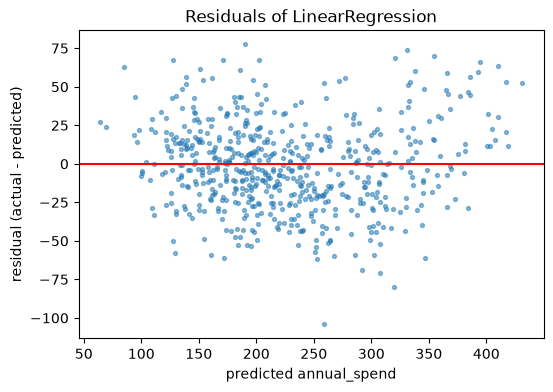

[6장] 머신러닝 (1): 회귀 모델과 평가
비즈니스빅데이터분석
6장
머신러닝 (1): 회귀 모델과 평가
2027학년도 「비즈니스빅데이터분석」의 준비 중인 교재입니다. 편집 상태를 검토하기 위해 미리 공개한 것으로, 수업 전에 내용과 순서가 바뀔 수 있습니다.
학사 7주차 · 교재 06 · 3부 AI 모델링 · 출제 분야: AI 모델링 > 머신러닝 모델 학습, 모델 성능 평가 및 시뮬레이션
AICE Associate의 AI 모델링 문항은 가이드가 모델의 종류와 하이퍼파라미터를 지정하고, 수험자가 그 설정대로 모델을 학습시킨 뒤 검증용 데이터로 지표를 산출하게 한다. 회귀 문제에서는 MAE와 같은 오차 지표로 두 모델을 비교하고 더 나은 모델의 이름을 답 변수에 저장하게 하는 형식이 대표적이다. AI 모델링 분야는 배점이 40점으로 가장 크고, 앞 분야의 전처리 결과를 그대로 입력으로 쓰므로 한 문항의 실패가 뒤 문항으로 이어진다.
본 장은 scikit-learn의 회귀 모델 세 가지(선형 회귀, 의사결정나무 회귀, 랜덤 포레스트 회귀)를 생성·학습·예측의 같은 형식으로 다루고, 하이퍼파라미터의 지정 방법, 난수 시드와 결과의 재현, 회귀 지표 네 가지(MAE, MSE, RMSE, 결정 계수)를 설명한다. 입력은 5장에서 만든 회귀용 훈련용·검증용 데이터이다. 본 장으로 자료 읽기에서 모델 평가까지의 전 과정이 처음으로 완결되며, 중간고사의 AI 모델링 문항은 본 장의 범위에서 출제된다. 7장은 같은 형식을 분류 모델에 적용한다.
학습 목표
- scikit-learn 모델의 생성·학습·예측을
모델 = 클래스(인자),fit,predict의 같은 형식으로 작성한다. - 선형 회귀의 절편과 계수(
intercept_,coef_)를 읽고, 스케일링한 입력에서 계수의 크기가 뜻하는 바를 설명한다. - 의사결정나무 회귀와 랜덤 포레스트 회귀를 지정된 하이퍼파라미터(
max_depth,min_samples_split,n_estimators)로 학습시킨다. - 하이퍼파라미터를 인자 이름으로 지정하고,
random_state로 결과를 재현한다. - MAE, MSE, RMSE, 결정 계수를 검증용 데이터로 산출하고, 지표로 두 모델을 비교하여 더 나은 모델의 이름을 답 변수에 저장한다.
- 훈련용 점수와 검증용 점수의 차이로 과대적합을 판단한다.
준비 사항
| 항목 | 내용 |
|---|---|
| 실습 노트북 | AICE_06장_실습_학생용.ipynb |
| 자료 | customers.csv(학기 공통 자료), laptops.csv(시간 제한 문항용) |
| 앞 장과의 연계 | 3장의 정제본 df_clean, 4장의 인코딩본 df_enc, 5장의 회귀용 분할과 스케일링(X_train_s, X_valid_s, y_train, y_valid) |
| 앞 과목과의 연계 | 「빅데이터 개론」 7장(회귀 분석, 결정 계수의 뜻), 「파이썬 기초」 7~8장(함수 호출과 키워드 인자) |
| 실습 환경 | 접속과 설치는 부록 A를 따른다 |
노트북 1부와 2부의 첫 코드 셀은 3~5장의 처리를 그대로 다시 실행한다. 코드는 집필 기준의 표준 처리 과정과 같으며, 마지막 줄의 출력으로 네 덩어리의 크기를 확인한다.
(2352, 24) (588, 24) (2352,) (588,)훈련용 2,352행, 검증용 588행이고 입력 열은 24개이다. 목표 열은 연간 구매액 annual_spend(만 원)이다. 입력 X에서 annual_spend와 churn을 모두 뺀 것은, churn이 7장의 목표 열이어서 회귀 문제의 입력으로 쓰지 않기로 정하였기 때문이다.
0. 실습 준비
본 장의 모든 예제는 5장이 만든 회귀용 데이터(X_train_s, X_valid_s, y_train, y_valid)에서 출발한다. 노트북의 첫 셀이 3~5장의 처리를 처음부터 다시 실행하므로, 이 절에서는 그 셀을 실행하고 결과가 5장의 결과와 같은지 확인한다. 시작점이 다르면 모든 지표가 강의안과 달라진다.
0-1. 노트북 열기
- 실습 환경에 접속하여
AICE_06장_실습_학생용.ipynb를 연다. 접속 방법과 파일의 위치는 부록 A를 따른다. - 커널의 상태 표시가 「유휴(Idle)」가 될 때까지 기다린다.
- 5장의 노트북이 열려 있으면 닫는다. 본 장의 노트북은 5장의 변수를 이어받지 않고 스스로 다시 만든다.
[그림 자리: 실습 노트북의 첫 화면]
AICE_06장_실습_학생용.ipynb를 연 직후의 주피터 화면. 첫 설명 셀(# [6장] 실습: 머신러닝 (1): 회귀 모델과 평가), 1부의 첫 코드 셀과 그 출력(2352, 24) (588, 24) (2352,) (588,), 커널 상태 표시를 화살표로 가리킨다. 학교 실습 환경의 주피터 랩에서 찍는다.
- 확인 1 노트북의 첫 설명 셀의 제목이
[6장] 실습: 머신러닝 (1): 회귀 모델과 평가이다.
0-2. 첫 코드 셀의 실행
1부의 첫 코드 셀을 고치지 않고 실행한다. 이 셀은 3장의 정제, 4장의 인코딩, 5장의 분할과 표준화를 차례로 수행한다(위의 출력). 마지막 줄은 네 덩어리의 크기를 출력한다. 이 셀을 실행하지 않으면 본 장의 모든 예제가 NameError: name 'X_train_s' is not defined를 낸다.
- 확인 2 첫 코드 셀의 출력이
(2352, 24) (588, 24) (2352,) (588,)이다.
0-3. 목표의 분포 확인
회귀 지표(5절)는 목표와 같은 단위(만 원)로 나오므로, 지표의 크기를 판단하려면 먼저 목표 값의 크기와 흩어짐을 알아야 한다.
# [예제 1]
print(round(y_train.mean(), 2), round(y_valid.mean(), 2))
y_train.describe().round(1)227.9 224.55
count 2352.0
mean 227.9
std 82.8
min 26.4
25% 171.0
50% 216.0
75% 270.4
max 521.3
Name: annual_spend, dtype: float64결과 읽기
| 묻는 것 | 읽는 자리 | 이 출력의 값 |
|---|---|---|
| 훈련용과 검증용의 평균 | 첫 줄 | 227.9만 원, 224.55만 원 |
| 연간 구매액의 흩어짐 | std |
82.8만 원 |
| 가운데 절반의 범위 | 25%, 75% |
171.0 ~ 270.4만 원 |
| 가장 작은 값과 큰 값 | min, max |
26.4만 원, 521.3만 원 |
평균이 약 228만 원이고 표준편차가 약 83만 원이다. 5절에서 선형 회귀의 MAE가 약 22.6만 원으로 나오는데, 이 값은 평균의 약 10%이고 표준편차의 약 4분의 1이다. 지표는 이처럼 목표의 크기와 견주어 읽는다.
- 확인 3 목표 확인 셀의 첫 줄이
227.9 224.55이고,std가82.8이다.
0-4. 앞 장과의 연결
| 앞 장의 결과 | 본 장에서 쓰는 방식 |
|---|---|
5장의 X_train_s, y_train |
모델의 학습(fit)에 쓴다 |
5장의 X_valid_s, y_valid |
예측(predict)과 지표의 계산에 쓴다 |
5장의 scaler.mean_, scale_ |
선형 회귀의 계수를 원래 단위로 바꿀 때 쓴다(2.3절) |
5장의 X_train.columns |
계수와 나무의 질문에 열 이름을 붙일 때 쓴다(2.2절, 3.1절) |
| 5장 6절의 정보 누출 | 검증용 데이터는 학습에 쓰지 않고 평가에만 쓴다 |
1. 생성·학습·예측의 공통 형식
1.1 세 단계
scikit-learn의 모델은 모두 같은 세 단계로 사용한다. 이 형식은 회귀와 분류, 모델의 종류에 관계없이 같으므로, 한 번 익히면 모델의 클래스 이름과 인자만 바꾸어 쓸 수 있다.
| 단계 | 코드 | 하는 일 |
|---|---|---|
| 생성 | model = LinearRegression() |
클래스를 불러 모델 객체를 만든다. 하이퍼파라미터는 이때 괄호 안에 지정한다 |
| 학습 | model.fit(X_train_s, y_train) |
훈련용 입력과 목표로 모델의 내부 값(계수, 나무의 분기)을 정한다 |
| 예측 | pred = model.predict(X_valid_s) |
입력만 주고 목표 값을 계산한다. 결과는 넘파이 배열이다 |
회귀(regression)는 목표가 연속적인 수치인 지도 학습이다. 연간 구매액, 주택 가격, 도착 시간처럼 값의 크기 자체가 의미를 갖는 목표를 예측한다. 목표가 범주(이탈 여부, 품질 등급)이면 분류이며 7장에서 다룬다. 두 문제는 모델의 클래스 이름(…Regressor와 …Classifier)과 평가 지표가 다를 뿐, 생성·학습·예측의 형식은 같다. 문항의 목표 열이 수치인지 범주인지를 먼저 보고 회귀와 분류 가운데 어느 쪽인지 판단한다.
# [예제 2]
from sklearn.linear_model import LinearRegression
model = LinearRegression() # 1. 생성
model.fit(X_train_s, y_train) # 2. 학습
pred = model.predict(X_valid_s) # 3. 예측
print(pred[:5].round(1))[386.2 150.5 186.3 262.4 171.6]fit에는 입력과 목표를 함께 주고, predict에는 입력만 준다. 예측값의 개수는 predict에 준 입력의 행 수와 같다. 검증용 입력 588행을 주었으므로 pred는 588개의 값을 담은 배열이다. 같은 순서의 실제 값은 다음과 같다.
# [예제 3]
print(y_valid.values[:5])[431. 164.8 138.5 210.8 110.6]첫 회원의 예측값은 386.2, 실제 값은 431.0이다. 이 차이를 모든 검증용 행에 대하여 요약한 값이 5절의 지표이다. y_valid는 시리즈이고 pred는 배열이므로 앞 5개를 볼 때 .values로 배열로 바꾸어 같은 꼴로 출력하였다.
결과 읽기
| 묻는 것 | 읽는 자리 | 이 출력의 값 |
|---|---|---|
| 예측값의 형태 | print의 출력이 대괄호이고 쉼표가 없다 |
넘파이 배열 |
| 첫 회원의 예측값과 실제 값 | 두 출력의 첫 값 | 386.2, 431.0(실제가 44.8만 원 더 크다) |
| 넷째 회원 | 두 출력의 넷째 값 | 262.4, 210.8(예측이 51.6만 원 더 크다) |
| 예측값의 개수 | len(pred) |
588(검증용 행의 수) |
차이의 방향이 회원마다 다르다는 점을 본다. 첫 회원은 실제보다 작게, 넷째 회원은 실제보다 크게 예측되었다. 차이를 그대로 평균하면 양과 음이 서로 지워지므로, 5절의 지표는 차이의 절댓값이나 제곱을 평균한다.
- 확인 4 예측값의 앞 5개가
[386.2 150.5 186.3 262.4 171.6]이고, 실제 값의 앞 5개가[431. 164.8 138.5 210.8 110.6]이다.
1.2 fit의 반환값
fit은 학습을 마친 모델 자신을 돌려준다. 노트북에서 fit을 셀의 마지막 줄에 두면 모델의 이름과 기본값이 아닌 인자가 출력된다.
# [예제 4]
model.fit(X_train_s, y_train)LinearRegression()이 출력은 오류나 경고가 아니다. 학습이 끝났다는 표시로 읽으면 된다. 주피터 노트북에서는 같은 내용이 상자 모양의 표시(HTML)로 나타난다. fit이 모델 자신을 돌려주므로 model = model.fit(X_train_s, y_train)처럼 써도 결과는 같다. 다만 pred = model.fit(X_train_s, y_train)처럼 fit의 결과를 예측값으로 착각하여 저장하는 실수가 있으므로, 학습과 예측은 줄을 나누어 쓴다.
출력의 괄호 안에는 기본값과 다른 인자만 표시된다. LinearRegression()의 괄호가 비어 있는 것은 모든 인자가 기본값이라는 뜻이다. 3.1절의 나무를 같은 방식으로 출력하면 DecisionTreeRegressor(max_depth=5, random_state=42)처럼 지정한 인자만 보인다. 따라서 이 출력은 가이드의 설정을 빠짐없이 넣었는지 확인하는 데에도 쓸 수 있다. 모든 인자의 값을 보려면 4.1절의 get_params()를 쓴다.
- 확인 5
fit을 셀의 마지막 줄에 둔 셀의 출력이LinearRegression()(또는 같은 이름의 상자)이다.
1.3 학습 전의 예측
생성만 하고 학습시키지 않은 모델로 예측하면 오류가 난다.
# [예제 5]
new_model = LinearRegression()
new_model.predict(X_valid_s)NotFittedError: This LinearRegression instance is not fitted yet. Call 'fit' with appropriate arguments before using this estimator.NotFittedError는 fit을 실행하지 않았다는 뜻이다. 시험에서는 생성과 예측 사이의 fit 줄을 빠뜨리거나, 학습시킨 모델과 다른 이름의 변수로 예측할 때 이 오류가 난다. 모델의 변수 이름은 가이드가 지정한 것을 세 단계 모두에 똑같이 쓴다.
시험에서 묻는 방식
AI 모델링 문항의 가이드는 모델의 종류, 하이퍼파라미터, 학습과 평가에 쓸 데이터, 결과를 저장할 변수를 지정한다. 가이드의 표현과 코드의 대응은 다음과 같다.
| 가이드의 표현 | 코드 | 확인할 것 |
|---|---|---|
“선형 회귀 모델을 lr이라는 이름으로 만들어라” |
lr = LinearRegression() |
변수 이름을 그대로 쓴다 |
| “훈련용 데이터로 학습시켜라” | lr.fit(X_train_s, y_train) |
어느 입력(스케일링 여부)을 쓰라고 하였는가 |
“검증용 데이터로 예측한 값을 pred에 저장하라” |
pred = lr.predict(X_valid_s) |
예측값의 개수가 검증용 행의 수와 같은가 |
“검증용 MAE를 mae에 저장하라” |
mae = mean_absolute_error(y_valid, pred) |
인자의 순서, 반올림의 지시가 있는가 |
가이드가 반올림을 지시하지 않으면 지표를 반올림하지 않고 저장한다. 채점은 대개 허용 오차 안에서 값을 비교하므로, 임의로 반올림하면 기준 값과 어긋날 수 있다.
1.4 흔한 오류
학습한 모델은 학습할 때의 입력 열 수(24)를 기억한다. 예측할 때 열의 수가 다르면 오류가 난다. 아래 셀은 검증용 입력의 앞 20열만 준 경우이다.
# [예제 6]
model.predict(X_valid_s[:, :20])ValueError: X has 20 features, but LinearRegression is expecting 24 features as input.학습할 때 입력과 목표의 행 수가 다르면 다음 오류가 난다. 훈련용 입력(2352행)과 검증용 목표(588행)를 섞어 준 경우이다.
# [예제 7]
LinearRegression().fit(X_train_s, y_valid)ValueError: Found input variables with inconsistent numbers of samples: [2352, 588]fit에 목표를 빠뜨리면 파이썬이 인자가 모자란다고 알린다.
# [예제 9]
model.fit(X_train_s)TypeError: LinearRegression.fit() missing 1 required positional argument: 'y'가장 위험한 것은 오류가 나지 않는 실수이다. 스케일링한 입력(X_train_s)으로 학습한 모델에 스케일링하지 않은 X_valid를 주면, 경고 한 줄만 나고 예측은 계산된다. 아래 셀은 그 경고를 붙잡아 출력한 것이다.
# [예제 8]
import warnings
with warnings.catch_warnings(record=True) as w:
warnings.simplefilter("always")
p_bad = model.predict(X_valid)
print(w[0].message)
print(p_bad[:3].round(1))X has feature names, but LinearRegression was fitted without feature names
[3092.8 2863.8 553.3]예측값이 3092.8만 원처럼 터무니없이 크다. 모델은 표준화한 값(대개 -3~3)을 기대하는데 원래 단위의 값(가입 기간 120 등)을 받았기 때문이다. 경고는 화면에서 놓치기 쉬우므로, 예측값의 범위가 목표의 범위(26.4~521.3만 원, 0절)와 비슷한지 눈으로 확인하는 습관을 들인다.
| 증상 | 실제 메시지 | 원인 | 대처 |
|---|---|---|---|
| 예측에서 오류 | NotFittedError: This LinearRegression instance is not fitted yet. |
fit을 실행하지 않았거나 다른 변수로 예측하였다 |
생성, 학습, 예측에 같은 변수 이름을 쓴다 |
| 예측에서 오류 | ValueError: X has 20 features, but LinearRegression is expecting 24 features as input. |
학습과 예측의 입력 열 수가 다르다 | 학습에 쓴 것과 같은 처리를 거친 입력을 준다 |
| 학습에서 오류 | ValueError: Found input variables with inconsistent numbers of samples: [2352, 588] |
입력과 목표의 행 수가 다르다 | X_train_s와 y_train을 짝지어 준다 |
| 학습에서 오류 | TypeError: LinearRegression.fit() missing 1 required positional argument: 'y' |
목표를 주지 않았다 | fit(X_train_s, y_train) |
| 경고와 엉뚱한 예측값 | X has feature names, but LinearRegression was fitted without feature names |
스케일링하지 않은 데이터프레임으로 예측하였다 | X_valid_s로 예측한다 |
- 확인 6 노트북의 빈 셀에서
model.predict(X_valid_s[:, :20])을 실행하면X has 20 features로 시작하는ValueError가 난다.
노트북 1부의 연습 1을 푼다.
2. 선형 회귀와 계수
2.1 모형
선형 회귀(LinearRegression)는 목표 값을 입력 열의 가중합으로 예측한다.
예측값 = 절편 + 계수1 × 입력1 + 계수2 × 입력2 + … + 계수24 × 입력24학습은 훈련용 데이터에서 실제 값과 예측값의 차이의 제곱합이 가장 작아지도록 절편과 계수를 정하는 일이다. 학습이 끝나면 절편은 intercept_, 계수는 coef_ 속성에 저장된다. 이름 끝의 밑줄(_)은 학습으로 정해진 값이라는 scikit-learn의 표기 관례이다. 학습 전에는 이 속성이 없다.
작은 예: 최소 제곱의 계산
입력이 하나인 다섯 점으로 “차이의 제곱합이 가장 작아지는” 계수를 손으로 구한다. 입력 x는 1, 2, 3, 4, 5이고 목표 y는 2, 4, 5, 4, 5이다. 입력이 하나일 때 최소 제곱의 계수와 절편은 다음 공식으로 구한다.
기울기 = Σ(x - x의 평균)(y - y의 평균) / Σ(x - x의 평균)²
절편 = y의 평균 - 기울기 × x의 평균
x의 평균 = 3, y의 평균 = (2 + 4 + 5 + 4 + 5) / 5 = 4
x - 3 -2 -1 0 1 2
y - 4 -2 0 1 0 1
곱 4 0 0 0 2 합 = 6
(x - 3)² 4 1 0 1 4 합 = 10
기울기 = 6 / 10 = 0.6
절편 = 4 - 0.6 × 3 = 2.2
예측값 = 2.2 + 0.6 × x → 2.8, 3.4, 4.0, 4.6, 5.2같은 자료를 LinearRegression으로 학습시킨다.
# [예제 15]
xs = pd.DataFrame({"x": [1, 2, 3, 4, 5]})
ys = pd.Series([2, 4, 5, 4, 5])
small = LinearRegression()
small.fit(xs, ys)
print(small.coef_, small.intercept_)
print(small.predict(xs))[0.6] 2.2
[2.8 3.4 4. 4.6 5.2]coef_가 [0.6], intercept_가 2.2로 손 계산과 같다. 입력이 24개인 공통 자료에서도 원리는 같다. 다만 계수 24개를 동시에 정해야 하므로 손 대신 행렬 계산으로 구한다.
- 확인 7 작은 예의 출력이
[0.6] 2.2와[2.8 3.4 4. 4.6 5.2]이다.
# [예제 10]
print(model.intercept_)
print(model.coef_.shape)227.89596088435377
(24,)계수는 입력 열의 수(24)만큼 있다. 순서는 X_train의 열 순서와 같다. X_train_s는 넘파이 배열이어서 열 이름이 없으므로, 열 이름은 스케일링 전의 X_train.columns에서 가져와 시리즈로 묶는다.
- 확인 8 절편이
227.89596088435377이고coef_의 모양이(24,)이다.
# [예제 11]
coef = pd.Series(model.coef_, index=X_train.columns).sort_values(ascending=False)
coef.round(2)grade 67.08
tenure_months 26.82
visits_per_month 19.29
app_user 9.05
coupon_use_rate 8.93
gender 1.04
region_Other 0.82
region_Gyeonggi 0.55
marketing_agree 0.47
region_Daegu 0.29
payment_Card 0.23
payment_Point 0.23
region_Busan 0.15
age 0.09
region_Seoul -0.01
payment_Mobile -0.20
payment_Transfer -0.23
cart_items -0.28
region_Gwangju -0.34
cs_calls -0.35
region_Daejeon -0.78
avg_session_min -0.87
region_Incheon -0.93
last_login_days -4.13
dtype: float642.2 계수의 해석
입력을 표준화하였으므로 각 계수는 “그 열이 표준편차 하나만큼 커질 때 연간 구매액이 몇 만 원 달라지는가”를 뜻한다. 모든 열의 단위가 표준편차로 같아졌으므로 계수의 절댓값을 서로 비교할 수 있다. 이 모델에서는 grade(67.08), tenure_months(26.82), visits_per_month(19.29)의 순서로 영향이 크고, last_login_days(-4.13)는 클수록 구매액이 작아지는 방향이다. 지역과 결제 수단의 원핫 열은 계수가 1 안팎으로 작다.
절편은 모든 입력이 0일 때의 예측값이다. 표준화한 입력에서 0은 각 열의 평균이므로, 절편은 “모든 열이 평균인 회원”의 예측값이 된다. 실제로 절편은 훈련용 목표 값의 평균과 같다.
결과 읽기
| 묻는 것 | 읽는 자리 | 이 출력의 값 |
|---|---|---|
| 영향이 가장 큰 열 | 정렬한 계수의 첫 줄 | grade(67.08) |
| 값이 클수록 구매액이 작아지는 열 | 음수 계수 가운데 절댓값이 가장 큰 것(마지막 줄) | last_login_days(-4.13) |
| 영향이 거의 없는 열 | 0에 가까운 계수 | region_Seoul(-0.01), age(0.09) |
| 원핫 열의 크기 | region_…, payment_… |
모두 절댓값 1 미만 |
계수의 부호는 방향, 절댓값은 크기를 뜻한다. last_login_days의 -4.13은 “마지막 접속이 표준편차 하나만큼 더 오래된 회원은 연간 구매액이 약 4.13만 원 적다”로 읽는다. 계수는 다른 열을 모두 고정하였을 때의 효과라는 점도 기억한다.
- 확인 9 계수 표의 첫 줄이
grade 67.08이고 마지막 줄이last_login_days -4.13이다.
# [예제 12]
print(y_train.mean())227.89596088435377예측값이 가중합이라는 것은 검증용 첫 행으로 직접 확인할 수 있다. 입력과 계수를 곱하여 더하고 절편을 더한 값이 predict의 첫 값(386.2)과 같다.
# [예제 13]
row = X_valid_s[0]
print((row * model.coef_).sum() + model.intercept_)
print(pred[0])386.24288362750957
386.2428836275096두 값의 마지막 자리가 조금 다른 것은 실수 계산의 반올림 오차이다.
계수의 뜻을 실행으로 확인하기
“표준편차 하나만큼 커질 때의 변화”라는 해석을 직접 확인한다. 아래 셀은 검증용 첫 회원의 입력을 복사한 뒤, 넷째 열(tenure_months, 가입 기간)만 1 키운 입력의 예측값과 원래 예측값의 차이를 구한다. 표준화한 입력에서 1은 원래 단위의 표준편차 하나이다.
# [예제 14]
row1 = X_valid_s[[0]]
row1_up = row1.copy()
row1_up[0, 3] = row1_up[0, 3] + 1
print((model.predict(row1_up) - model.predict(row1)).round(2))
print(model.coef_[3].round(3), scaler.scale_[3].round(3), (model.coef_[3] / scaler.scale_[3]).round(3))[26.82]
26.818 34.449 0.778예측값의 차이 26.82는 tenure_months의 계수(26.818)와 같다. 둘째 줄은 이 계수를 원래 단위로 바꾸는 계산이다. 훈련용의 가입 기간의 표준편차(scale_[3])가 34.449개월이므로, 26.818 / 34.449 ≈ 0.778이다. 가입 기간이 1개월 길면 연간 구매액이 약 0.78만 원 많다는 뜻이다.
표준화한 입력의 계수 = 원래 단위의 계수 × 표준편차
원래 단위의 계수 = 표준화한 입력의 계수 / 표준편차
tenure_months: 26.818 / 34.449 ≈ 0.778 (만 원 / 개월)- 확인 10 계수 확인 셀의 출력이
[26.82]와26.818 34.449 0.778이다.
선형 회귀의 가정과 한계
선형 회귀는 “입력이 한 단위 커질 때 목표가 늘 같은 폭으로 변한다”고 가정한다. 이 가정이 맞으면 적은 데이터로도 안정된 예측을 하고, 계수로 각 열의 효과를 설명할 수 있다는 장점이 있다. 가정이 맞지 않는 관계, 예를 들어 등급이 한 단계 오를 때 구매액이 늘어나는 폭이 단계마다 다른 관계는 선형 회귀가 정확히 나타내지 못한다. 5.7절의 잔차에서 VIP 회원을 체계적으로 작게 예측하는 모습이 그 증거이다. 또 입력 열끼리 강하게 관련되어 있으면(예: 가입 기간과 누적 방문 수) 계수의 값이 불안정해져 하나하나의 계수를 해석하기 어려워진다. 이런 한계 때문에 실무와 시험에서는 선형 회귀를 기준 모델로 먼저 학습시키고, 나무 계열의 모델과 지표로 비교하는 순서를 많이 쓴다.
2.3 스케일링과 계수
선형 회귀의 예측값은 입력의 스케일링 여부와 관계없이 같다(연습 1). 표준화는 각 열에서 평균을 빼고 표준편차로 나누는 일차 변환이므로, 계수와 절편이 그만큼 바뀌어 같은 예측을 만든다. 달라지는 것은 계수의 뜻이다. 스케일링하지 않은 입력의 계수는 “원래 단위로 1만큼 커질 때의 변화”이다. 예를 들어 grade는 0~3의 등급 번호이므로 스케일링하지 않은 모델의 grade 계수는 등급이 한 단계 오를 때의 구매액 변화이다(연습 2). 계수의 크기로 열의 영향을 비교하려면 스케일링한 입력의 계수를 본다.
| 속성 | 뜻 | 모양 |
|---|---|---|
coef_ |
입력 열마다의 계수 | (입력 열의 수,) |
intercept_ |
절편 | 실수 하나 |
n_features_in_ |
학습에 쓴 입력 열의 수 | 정수 |
흔한 오류
| 증상 | 실제 메시지 | 원인 | 대처 |
|---|---|---|---|
| 계수를 열 이름으로 묶을 때 오류 | ValueError: Length of values (24) does not match length of index (26) 꼴 |
index에 df_enc.columns처럼 목표 열이 든 이름을 주었다 |
X_train.columns를 쓴다 |
| 계수의 크기를 비교하였더니 이상하다 | (오류 없음) | 스케일링하지 않은 입력의 계수를 비교하였다 | 표준화한 입력의 계수로 비교한다 |
intercept_가 훈련용 평균과 다르다 |
(오류 없음) | 스케일링하지 않은 입력으로 학습하였다 | 정상이다. 절편이 평균과 같은 것은 표준화한 입력일 때이다 |
첫 행의 메시지는 노트북에서 pd.Series(model.coef_, index=df_enc.columns)를 실행하면 확인할 수 있다. 숫자 24와 26은 계수의 개수와 이름의 개수이다.
노트북 1부의 연습 2를 푼다.
3. 의사결정나무 회귀와 랜덤 포레스트 회귀
3.1 의사결정나무 회귀
의사결정나무 회귀(DecisionTreeRegressor)는 “grade ≤ 0.5인가”와 같은 질문으로 훈련용 데이터를 두 갈래로 나누기를 되풀이한다. 질문은 나뉜 두 무리 안에서 목표 값의 흩어짐(제곱 오차)이 가장 작아지도록 고른다. 더 나눌 수 없게 된 마지막 무리를 잎(leaf)이라 하고, 잎에 속한 훈련용 목표 값의 평균이 그 잎의 예측값이 된다.
# [예제 16]
from sklearn.tree import DecisionTreeRegressor
tree = DecisionTreeRegressor(max_depth=5, random_state=42)
tree.fit(X_train_s, y_train)
tree_pred = tree.predict(X_valid_s)
print(tree_pred[:5].round(1))[489.5 172.6 175.3 244. 203.3]# [예제 17]
import numpy as np
print("깊이", tree.get_depth())
print("잎의 수", tree.get_n_leaves())
print("서로 다른 예측값의 수", len(np.unique(tree_pred)))깊이 5
잎의 수 32
서로 다른 예측값의 수 31최대 깊이가 5이면 질문을 최대 다섯 번 거치므로 잎은 많아야 2⁵ = 32개이다. 이 나무는 32개의 잎을 모두 만들었다. 모든 검증용 행의 예측값은 32개 잎의 평균값 가운데 하나이므로, 588개 예측값의 서로 다른 값은 31개뿐이다(두 잎의 평균이 우연히 같았다). 선형 회귀의 예측값이 연속적인 것과 달리 나무의 예측은 계단 모양이다. 나무가 얕으면 계단이 거칠어 정밀한 예측을 하지 못하고, 깊으면 훈련용 데이터의 우연한 변동까지 따라가게 된다(5.5절).
- 확인 11 나무의 출력이
깊이 5,잎의 수 32,서로 다른 예측값의 수 31이다.
작은 예: 분기 하나의 선택
나무가 질문을 고르는 방법을 여섯 점으로 따라간다. 입력 x는 1, 2, 3, 10, 11, 12이고 목표 y는 5, 6, 7, 20, 21, 22이다. 깊이 1의 나무(질문 하나)는 이웃한 두 x 값의 가운데(1.5, 2.5, 6.5, 10.5, 11.5)를 분기 후보로 보고, 후보마다 나뉜 두 무리의 제곱 오차의 합을 계산하여 가장 작은 후보를 고른다. 무리의 제곱 오차는 무리 안의 값에서 무리의 평균을 뺀 값을 제곱하여 더한 것이다.
후보 6.5: 왼쪽 y = 5, 6, 7 평균 6 제곱 오차 1 + 0 + 1 = 2
오른쪽 y = 20, 21, 22 평균 21 제곱 오차 1 + 0 + 1 = 2 합 4
후보 2.5: 왼쪽 y = 5, 6 평균 5.5 제곱 오차 0.25 + 0.25 = 0.5
오른쪽 y = 7, 20, 21, 22 평균 17.5
제곱 오차 10.5² + 2.5² + 3.5² + 4.5² = 149 합 149.5후보 6.5의 합(4)이 가장 작으므로 나무는 “x ≤ 6.5인가”를 질문으로 고르고, 두 잎의 예측값은 각 무리의 평균(6과 21)이 된다. export_text는 학습한 나무의 질문과 잎의 값을 글자로 보여 준다.
# [예제 18]
from sklearn.tree import export_text
xt = pd.DataFrame({"x": [1, 2, 3, 10, 11, 12]})
yt = pd.Series([5, 6, 7, 20, 21, 22])
stump = DecisionTreeRegressor(max_depth=1)
stump.fit(xt, yt)
print(export_text(stump, feature_names=["x"]))|--- x <= 6.50
| |--- value: [6.00]
|--- x > 6.50
| |--- value: [21.00]다섯 후보의 제곱 오차의 합을 모두 계산하면 다음과 같다. [선택]
# [예제 19]
for th in [1.5, 2.5, 6.5, 10.5, 11.5]:
left = yt[xt["x"] <= th]
right = yt[xt["x"] > th]
sse = ((left - left.mean()) ** 2).sum() + ((right - right.mean()) ** 2).sum()
print(th, round(sse, 2))1.5 254.8
2.5 149.5
6.5 4.0
10.5 149.5
11.5 254.8[그림 자리: 의사결정나무의 분할 도식] 위의 여섯 점을 x축에 늘어놓고 x = 6.5에 세로선을 그은 그림과, 그 오른쪽에 나무 모양(뿌리 마디 “x ≤ 6.5”, 왼쪽 잎 “value 6”, 오른쪽 잎 “value 21”)을 나란히 그린다. 아래에 공통 자료의 깊이 2 나무(
grade≤ 0.60,grade≤ -0.45,grade≤ 1.64와 네 잎의 값)를 같은 모양으로 그린다. 도식 도구로 새로 그린다.
공통 자료에서 깊이 2의 나무를 학습시키고 질문을 읽는다. 마지막 줄은 등급 번호 0~3(Bronze, Silver, Gold, VIP)을 표준화한 값이다.
# [예제 20]
tree2 = DecisionTreeRegressor(max_depth=2, random_state=42)
tree2.fit(X_train_s, y_train)
print(export_text(tree2, feature_names=list(X_train.columns), decimals=2))
grade_codes = np.array([0, 1, 2, 3])
print(((grade_codes - scaler.mean_[2]) / scaler.scale_[2]).round(3))|--- grade <= 0.60
| |--- grade <= -0.45
| | |--- value: [169.13]
| |--- grade > -0.45
| | |--- value: [222.60]
|--- grade > 0.60
| |--- grade <= 1.64
| | |--- value: [288.48]
| |--- grade > 1.64
| | |--- value: [415.02]
[-0.974 0.073 1.121 2.169]결과 읽기
| 마디 | 질문 | 원래 단위로 읽기 | 잎의 예측값 |
|---|---|---|---|
| 뿌리 | grade <= 0.60 |
등급이 Bronze 또는 Silver인가(0.073 ≤ 0.60 < 1.121) | |
| 왼쪽 | grade <= -0.45 |
Bronze인가 | Bronze 169.13, Silver 222.60 |
| 오른쪽 | grade <= 1.64 |
Gold인가 | Gold 288.48, VIP 415.02 |
질문의 기준값이 0.60, -0.45처럼 보이는 것은 입력이 표준화되었기 때문이다. 마지막 줄의 변환값(Bronze -0.974, Silver 0.073, Gold 1.121, VIP 2.169)과 견주면, 깊이 2의 나무가 네 질문을 모두 grade로 하여 회원을 등급별로 나누었다는 것을 알 수 있다. 네 잎의 값은 등급별 평균 구매액이다. 2.2절에서 선형 회귀의 계수도 grade가 가장 컸다. 두 모델이 같은 열을 가장 중요하게 보았다.
- 확인 12 여섯 점의 나무 출력이
x <= 6.50과value: [6.00],value: [21.00]이다. - 확인 13 깊이 2 나무의 첫 질문이
grade <= 0.60이고, 네 잎의 값이169.13,222.60,288.48,415.02이다.
| 인자 | 뜻 | 기본값 | 값을 키우면 |
|---|---|---|---|
max_depth |
나무의 최대 깊이 | None(제한 없음) |
나무가 복잡해진다 |
min_samples_split |
마디를 나누는 데 필요한 최소 행 수 | 2 |
나무가 단순해진다 |
min_samples_leaf |
잎 하나에 남아야 하는 최소 행 수 | 1 |
나무가 단순해진다 |
random_state |
난수 시드 | None |
(4절) |
기본값은 모두 “끝까지 나눈다”는 쪽이다. 아무 인자도 주지 않으면 잎마다 훈련용 행이 거의 하나씩 남을 때까지 나누므로, 훈련용 데이터에는 거의 완벽하게 맞고 검증용 데이터에는 잘 맞지 않는 나무가 된다. 그래서 시험의 가이드는 대개 max_depth나 min_samples_split을 지정한다.
min_samples_split과 min_samples_leaf의 차이는 다음과 같다. min_samples_split=100은 “행이 100개 미만인 마디는 더 나누지 않는다”는 뜻이고, min_samples_leaf=50은 “나눈 뒤 어느 쪽이든 50개 미만이 남는 분기는 하지 않는다”는 뜻이다. 앞의 것은 나누기 전의 크기를, 뒤의 것은 나눈 뒤의 크기를 본다.
3.2 랜덤 포레스트 회귀
랜덤 포레스트 회귀(RandomForestRegressor)는 의사결정나무를 여러 그루 학습시키고 그 예측값의 평균을 예측값으로 쓴다. 나무마다 훈련용 행을 복원 추출로 다시 뽑아(부트스트랩) 서로 조금씩 다른 데이터로 학습시키므로 나무들의 오차가 서로 상쇄된다. 나무의 수는 n_estimators로 지정하고 기본값은 100이다. 나무 하나하나의 크기는 의사결정나무와 같은 인자(max_depth, min_samples_split 등)로 정한다.
# [예제 21]
from sklearn.ensemble import RandomForestRegressor
rf = RandomForestRegressor(n_estimators=100, random_state=42)
rf.fit(X_train_s, y_train)
rf_pred = rf.predict(X_valid_s)
print(rf_pred[:5].round(1))[436.7 150.5 164.6 237.5 174.6]# [예제 22]
print(len(rf.estimators_))
rf.estimators_[0]100
DecisionTreeRegressor(max_features=1.0, random_state=1608637542)학습한 나무들은 estimators_ 속성에 리스트로 들어 있다. 첫 나무의 출력에 random_state=1608637542가 보이는 것은, 모델에 준 random_state=42로부터 나무마다 서로 다른 시드를 만들어 배정하였다는 뜻이다. max_features=1.0은 회귀의 랜덤 포레스트가 기본적으로 모든 입력 열을 분기의 후보로 쓴다는 표시이다.
- 확인 14 랜덤 포레스트의 예측값 앞 5개가
[436.7 150.5 164.6 237.5 174.6]이고, 나무의 수가100이다.
랜덤 포레스트의 원리: 부트스트랩과 평균
랜덤 포레스트의 원리는 두 단계이다. 첫째, 나무마다 훈련용 데이터에서 같은 수의 행을 복원 추출로 다시 뽑는다(부트스트랩). 복원 추출은 뽑은 행을 다시 넣고 뽑는 방식이어서 같은 행이 여러 번 뽑히고, 한 번도 뽑히지 않는 행도 생긴다. 그래서 나무마다 조금씩 다른 데이터로 학습한다. 둘째, 예측할 때에는 모든 나무의 예측값을 평균한다. 나무 하나하나는 자기 데이터의 우연한 변동을 따라가 오차가 크지만, 그 오차의 방향이 나무마다 달라 평균하면 서로 상쇄된다.
[그림 자리: 랜덤 포레스트의 구성 도식] 왼쪽에 훈련용 데이터(2352행)를 두고, 부트스트랩으로 뽑은 세 개의 표본(같은 행이 겹쳐 뽑힌 모습을 색으로 표시)에서 나무 세 그루가 자라는 모습을 그린다. 오른쪽에서 새 회원 한 명의 입력이 세 나무에 들어가 418.9, 387.7, 476.9 같은 서로 다른 예측값을 내고, 이 값들의 평균이 최종 예측값이 되는 화살표를 그린다. 나무 100그루 가운데 세 그루만 그린다는 표시를 둔다. 도식 도구로 새로 그린다.
복원 추출의 모습을 열 개의 행으로 본다. 0~9의 행 번호에서 열 번을 복원 추출하고, 서로 다른 번호의 수를 센다. 이어서 훈련용 2352행에서 2352번을 복원 추출하였을 때 서로 다른 행의 수와 비율을 구한다.
# [예제 23]
rng = np.random.default_rng(42)
idx = rng.integers(0, 10, size=10)
print(sorted(idx.tolist()))
print(len(set(idx.tolist())))
idx_big = rng.integers(0, 2352, size=2352)
print(len(set(idx_big.tolist())), round(len(set(idx_big.tolist())) / 2352, 3))[0, 0, 0, 2, 4, 4, 6, 6, 7, 8]
6
1475 0.627열 번 뽑았는데 0번이 세 번, 4번과 6번이 두 번씩 뽑혔고, 1, 3, 5, 9번은 한 번도 뽑히지 않았다. 서로 다른 행은 6개뿐이다. 2352행에서는 서로 다른 행이 1475개로 약 63%이다. 행 하나가 한 번의 추출에서 뽑히지 않을 확률은 (1 - 1/n)이므로 n번 모두 뽑히지 않을 확률은 (1 - 1/n)ⁿ이고, n이 크면 이 값은 약 0.368에 가까워진다. 그래서 나무 하나는 훈련용 행의 약 63.2%만 보고 학습한다.
평균의 단계를 확인한다. 아래 셀은 100그루의 나무가 검증용 첫 회원에 대하여 낸 예측값을 모아, 앞의 다섯 값, 최솟값과 최댓값, 평균을 출력한다. 마지막 줄의 둘째 값은 rf.predict의 첫 값이다.
# [예제 24]
tree_preds = []
for t in rf.estimators_:
tree_preds.append(t.predict(X_valid_s[:1])[0])
tree_preds = np.array(tree_preds)
print(tree_preds[:5].round(1))
print(tree_preds.min().round(1), tree_preds.max().round(1))
print(tree_preds.mean().round(1), rf_pred[0].round(1))[418.9 387.7 476.9 403. 501.9]
376.2 521.3
436.7 436.7결과 읽기
| 묻는 것 | 읽는 자리 | 이 출력의 값 |
|---|---|---|
| 나무마다의 예측값 | 첫 줄 | 418.9, 387.7, 476.9, 403.0, 501.9 |
| 나무들의 예측값의 폭 | 둘째 줄 | 376.2 ~ 521.3 |
| 나무들의 평균과 숲의 예측값 | 셋째 줄 | 436.7과 436.7(같다) |
| 실제 값 | 1.1절의 실제 값의 첫 값 | 431.0 |
나무 하나의 예측은 376.2에서 521.3까지 흩어졌지만, 100그루의 평균(436.7)은 실제 값(431.0)에 가깝다. 이것이 여러 나무를 평균하는 까닭이다.
- 확인 15 복원 추출 셀의 둘째 줄이
6이고, 셋째 줄이1475 0.627이다. - 확인 16 나무 평균 셀의 마지막 줄이
436.7 436.7이다.
| 인자 | 뜻 | 기본값 |
|---|---|---|
n_estimators |
나무의 수 | 100 |
max_depth |
나무 하나의 최대 깊이 | None |
min_samples_split |
마디를 나누는 데 필요한 최소 행 수 | 2 |
random_state |
난수 시드 | None |
n_jobs |
병렬로 실행할 작업의 수. -1이면 모든 코어 |
None(병렬 실행 없음) |
나무의 수를 늘리면 예측은 대체로 안정되지만 학습 시간이 나무의 수에 비례하여 늘어난다. 시험 환경의 CPU는 2코어이므로, 가이드가 지정하지 않은 큰 값을 임의로 쓰지 않는다.
나무의 수가 늘면 평균에 들어가는 예측값이 많아져 숲의 예측이 덜 흔들린다. 그러나 나무의 수를 아무리 늘려도 나무 하나하나의 한계(깊이 제한으로 인한 거친 계단)는 없어지지 않는다. 나무의 수는 안정성을, 나무의 깊이는 표현력을 정한다고 정리할 수 있다. 4.3절에서 나무 30그루의 숲이 시드에 따라 예측값이 조금씩 달라지는 것도 평균에 들어간 나무가 적기 때문이다.
[최신 자료 자리: AICE 시험 환경의 CPU와 메모리] 2026-11-13에 확인한 수험자 가이드(https://aice.study/certi/examGuide)에는 CPU 2 Core, Memory 16G가 제공된다고 적혀 있었다. 시험 환경의 사양은 바뀔 수 있으므로 수업 전에 다시 확인한다.
세 모델의 비교
| 항목 | 선형 회귀 | 의사결정나무 회귀 | 랜덤 포레스트 회귀 |
|---|---|---|---|
| 예측의 원리 | 입력의 가중합 | 질문으로 나눈 잎의 평균 | 나무 100그루의 예측의 평균 |
| 예측값의 모양 | 연속적 | 계단 모양(잎의 수만큼의 값) | 계단이 잘게 겹친 모양 |
| 학습으로 정해지는 것 | 절편과 계수 | 질문(열과 기준값)과 잎의 값 | 나무마다의 질문과 잎의 값 |
| 스케일링의 영향 | 계수의 뜻이 바뀐다. 예측값은 같다 | 없다 | 없다 |
| 해석 | 계수로 열의 효과를 읽는다 | export_text로 질문을 읽는다 |
나무가 많아 직접 읽기 어렵다. 변수 중요도(8장) |
| 과대적합의 경향 | 작다 | 깊을수록 크다 | 나무 하나보다 작다 |
| 주요 하이퍼파라미터 | 없다(기본 설정) | max_depth, min_samples_split |
n_estimators, max_depth |
| 학습 시간 | 짧다 | 짧다 | 나무의 수에 비례한다 |
이 표는 어느 모델이 언제나 낫다는 뜻이 아니다. 같은 자료에서도 하이퍼파라미터에 따라 순위가 바뀐다(중심 실습). 시험에서는 가이드가 지정한 모델과 설정으로 학습시키고, 지표의 값으로만 비교한다.
노트북 1부의 연습 3(최대 깊이와 잎의 수)과 연습 4(min_samples_split)를 푼다.
4. 하이퍼파라미터와 난수 시드
4.1 하이퍼파라미터
하이퍼파라미터는 학습 전에 사람이 정하는 설정이다. 학습으로 정해지는 값(선형 회귀의 계수, 나무의 분기 기준)과 구분된다. scikit-learn에서는 모델을 생성할 때 인자로 지정하고, 지정한 값은 get_params()로 확인한다.
# [예제 25]
tree.get_params(){'ccp_alpha': 0.0, 'criterion': 'squared_error', 'max_depth': 5, 'max_features': None, 'max_leaf_nodes': None, 'min_impurity_decrease': 0.0, 'min_samples_leaf': 1, 'min_samples_split': 2, 'min_weight_fraction_leaf': 0.0, 'monotonic_cst': None, 'random_state': 42, 'splitter': 'best'}지정한 max_depth=5와 random_state=42 외의 인자는 모두 기본값이다. 시험의 가이드가 “최대 깊이 5, 난수 시드 42”처럼 우리말로 설정을 제시하면, 공식 문서의 Parameters 목록에서 해당하는 인자 이름을 찾아 쓴다.
결과 읽기
| 묻는 것 | 읽는 자리 | 이 출력의 값 |
|---|---|---|
| 지정한 인자가 반영되었는가 | 'max_depth', 'random_state' |
5, 42 |
| 분기의 기준 | 'criterion' |
'squared_error'(제곱 오차. 3.1절의 손 계산과 같은 기준) |
| 분기 후보로 쓰는 열 | 'max_features' |
None(모든 열) |
| 나누기의 하한 | 'min_samples_split', 'min_samples_leaf' |
2, 1(기본값) |
get_params()는 사전(딕셔너리)을 돌려주므로 tree.get_params()["max_depth"]처럼 인자 하나의 값을 꺼낼 수 있다. 시험에서 “설정이 가이드대로인지 확인하라”는 요구가 있으면 이 방법을 쓴다.
- 확인 17
get_params()의 출력에'max_depth': 5와'random_state': 42가 있다.
| 가이드의 표현 | 인자 |
|---|---|
| 나무의 수, 추정기의 수 | n_estimators |
| 최대 깊이 | max_depth |
| 분할에 필요한 최소 샘플 수 | min_samples_split |
| 잎의 최소 샘플 수 | min_samples_leaf |
| 난수 시드, 랜덤 상태 | random_state |
학습으로 정해지는 값과 사람이 정하는 값
| 모델 | 사람이 정하는 값(하이퍼파라미터) | 학습으로 정해지는 값(속성) |
|---|---|---|
LinearRegression |
fit_intercept(기본 True) |
coef_, intercept_ |
DecisionTreeRegressor |
max_depth, min_samples_split, min_samples_leaf, random_state |
질문과 잎의 값(tree_), get_depth(), get_n_leaves() |
RandomForestRegressor |
n_estimators, max_depth, random_state, n_jobs |
estimators_(나무의 목록) |
StandardScaler(5장) |
with_mean, with_std |
mean_, scale_ |
이름 끝에 밑줄이 붙은 속성(coef_, estimators_)은 fit을 실행한 뒤에만 생긴다. 하이퍼파라미터는 생성할 때 괄호 안에 쓰고, get_params()로 읽는다. 둘을 헷갈려 LinearRegression(coef_=...)처럼 학습으로 정해지는 값을 지정하려 하면 4.2절의 unexpected keyword argument 오류가 난다.
4.2 인자 이름에 의한 지정
하이퍼파라미터는 max_depth=5처럼 이름을 붙여 지정한다. scikit-learn의 모델은 대부분의 인자를 이름으로만 받도록 정의되어 있다. 공식 문서의 서명에 있는 * 표시가 그 경계이다. RandomForestRegressor(n_estimators=100, *, criterion=..., max_depth=...)에서 * 뒤의 인자는 이름 없이 위치로 줄 수 없다.
# [예제 27]
rf_d = RandomForestRegressor(100, 5)TypeError: RandomForestRegressor.__init__() takes from 1 to 2 positional arguments but 3 were given인자 이름의 철자가 틀리면 다음 오류가 난다. 현재 판의 파이썬은 비슷한 이름을 제안해 준다.
# [예제 28]
rf_e = RandomForestRegressor(n_estimator=100, random_state=42)TypeError: RandomForestRegressor.__init__() got an unexpected keyword argument 'n_estimator'. Did you mean 'n_estimators'?n_estimators, min_samples_split처럼 복수형의 s가 붙는 이름에서 철자 오류가 잦다. 오류 메시지의 unexpected keyword argument 뒤에 나온 이름을 공식 문서의 인자 목록과 대조한다.
인자의 이름은 맞지만 값의 종류가 틀리면, 모델을 만들 때가 아니라 fit을 실행할 때 오류가 난다. scikit-learn은 생성할 때 값을 저장만 하고, 학습을 시작할 때 값을 검사하기 때문이다.
# [예제 29]
tree_s = DecisionTreeRegressor(max_depth="5", random_state=42)
tree_s.fit(X_train_s, y_train)InvalidParameterError: The 'max_depth' parameter of DecisionTreeRegressor must be an int in the range [1, inf) or None. Got '5' instead.| 증상 | 실제 메시지 | 원인 | 대처 |
|---|---|---|---|
| 생성에서 오류 | TypeError: RandomForestRegressor.__init__() takes from 1 to 2 positional arguments but 3 were given |
하이퍼파라미터를 이름 없이 위치로 주었다 | n_estimators=100, max_depth=5처럼 이름을 붙인다 |
| 생성에서 오류 | TypeError: ... got an unexpected keyword argument 'n_estimator'. Did you mean 'n_estimators'? |
인자 이름의 철자가 틀렸다 | 메시지가 제안하는 이름으로 고친다 |
| 학습에서 오류 | InvalidParameterError: The 'max_depth' parameter of DecisionTreeRegressor must be an int in the range [1, inf) or None. Got '5' instead. |
값을 문자열로 주었다 | max_depth=5처럼 따옴표 없이 준다 |
| 실행마다 지표가 다르다 | (오류 없음) | random_state를 빠뜨렸다 |
4.3절 |
- 확인 18 노트북의 빈 셀에서
DecisionTreeRegressor(max_depth="5").fit(X_train_s, y_train)을 실행하면InvalidParameterError가 나고, 메시지에must be an int in the range [1, inf) or None이 있다.
4.3 random_state와 결과의 재현
랜덤 포레스트는 부트스트랩 추출과 분기 후보의 선택에 난수를 쓴다. random_state를 지정하지 않으면 실행할 때마다 다른 난수가 쓰여 결과가 달라진다. 아래 셀은 나무 30그루의 랜덤 포레스트 셋을 학습시킨다. 앞의 둘은 random_state=42이고, 셋째는 지정하지 않았다.
# [예제 26]
rf_a = RandomForestRegressor(n_estimators=30, random_state=42)
rf_b = RandomForestRegressor(n_estimators=30, random_state=42)
rf_c = RandomForestRegressor(n_estimators=30)
rf_a.fit(X_train_s, y_train)
rf_b.fit(X_train_s, y_train)
rf_c.fit(X_train_s, y_train)
print(rf_a.predict(X_valid_s)[:3].round(2))
print(rf_b.predict(X_valid_s)[:3].round(2))
print(rf_c.predict(X_valid_s)[:3].round(2))[434.29 149.1 161.69]
[434.29 149.1 161.69]
[452.6 158.06 157.36]앞의 두 줄은 같고 셋째 줄은 다르다. 셋째 줄은 셀을 다시 실행할 때마다 값이 바뀐다. 시험의 채점은 지표의 값을 기준 값과 비교하므로, 가이드가 random_state를 지정하면 반드시 그 값을 써야 같은 결과가 나온다. random_state의 값 자체(42, 0, 2027 등)에는 특별한 뜻이 없다. 같은 값을 쓰면 같은 결과가 나온다는 것이 중요하다.
| 무엇에 난수가 쓰이는가 | 인자 |
|---|---|
| 훈련용과 검증용의 분할 | train_test_split의 random_state |
| 의사결정나무의 분기 후보의 순서(같은 점수의 분기가 여럿일 때) | DecisionTreeRegressor의 random_state |
| 랜덤 포레스트의 부트스트랩 추출과 분기 후보의 선택 | RandomForestRegressor의 random_state |
| 선형 회귀 | 쓰지 않는다. LinearRegression에는 random_state 인자가 없다 |
분할의 random_state가 다르면 훈련용과 검증용에 들어가는 행이 달라지므로, 모델의 random_state를 맞추어도 지표가 달라진다. 결과를 재현하려면 분할과 모델의 시드를 모두 고정한다.
- 확인 19 난수 시드 셀의 첫 두 줄이 모두
[434.29 149.1 161.69]이고, 셋째 줄은 이와 다르다(셋째 줄의 값은 실행할 때마다 바뀐다).
노트북 1부의 연습 5(인자 이름의 오류 정정)를 푼다.
5. 회귀 지표
5.1 네 가지 지표
회귀 모델의 성능은 실제 값과 예측값의 차이(오차)를 요약하여 나타낸다. 지표 함수는 sklearn.metrics에 있고, 모두 함수(실제 값, 예측값)의 순서로 인자를 받는다.
| 지표 | 계산 | 함수 | 단위 | 좋은 방향 |
|---|---|---|---|---|
| MAE(평균 절대 오차) | |실제값 - 예측값|의 평균 | mean_absolute_error |
목표 열과 같다 | 작을수록 |
| MSE(평균 제곱 오차) | (실제값 - 예측값)²의 평균 | mean_squared_error |
목표 열의 제곱 | 작을수록 |
| RMSE(평균 제곱근 오차) | MSE의 제곱근 | np.sqrt(mean_squared_error(...)) |
목표 열과 같다 | 작을수록 |
| 결정 계수(R²) | 1 - (오차 제곱합 / 평균과의 차이 제곱합) | r2_score |
없음 | 클수록(최대 1) |
# [예제 30]
from sklearn.metrics import mean_absolute_error, mean_squared_error, r2_score
mae = mean_absolute_error(y_valid, pred)
mse = mean_squared_error(y_valid, pred)
rmse = np.sqrt(mse)
r2 = r2_score(y_valid, pred)
print("MAE ", round(mae, 2))
print("MSE ", round(mse, 2))
print("RMSE", round(rmse, 2))
print("R2 ", round(r2, 3))MAE 22.57
MSE 800.94
RMSE 28.3
R2 0.872정의대로 직접 계산하면 같은 값이 나온다. 지표 함수가 하는 일은 이 한 줄의 계산이다.
- 확인 20 지표 셀의 출력이
MAE 22.57,MSE 800.94,RMSE 28.3,R2 0.872이다.
작은 예: 다섯 예측값의 손 계산
다섯 명의 실제 값과 예측값으로 네 지표를 손으로 계산한다. 잔차는 실제값 - 예측값이다. 잔차가 양수이면 실제보다 작게 예측한 것(과소 예측), 음수이면 크게 예측한 것(과대 예측)이다.
| 회원 | 실제값 | 예측값 | 잔차 | 잔차의 절댓값 | 잔차의 제곱 | 실제값 - 평균(200) | 그 제곱 |
|---|---|---|---|---|---|---|---|
| 1 | 100 | 110 | -10 | 10 | 100 | -100 | 10000 |
| 2 | 150 | 140 | 10 | 10 | 100 | -50 | 2500 |
| 3 | 200 | 210 | -10 | 10 | 100 | 0 | 0 |
| 4 | 250 | 230 | 20 | 20 | 400 | 50 | 2500 |
| 5 | 300 | 330 | -30 | 30 | 900 | 100 | 10000 |
| 합 | 1000 | 80 | 1600 | 25000 |
MAE = 잔차의 절댓값의 평균 = 80 / 5 = 16
MSE = 잔차의 제곱의 평균 = 1600 / 5 = 320
RMSE = √MSE = √320 ≈ 17.889
R² = 1 - (잔차의 제곱합 / 실제값과 평균의 차이의 제곱합)
= 1 - 1600 / 25000 = 1 - 0.064 = 0.936같은 계산을 지표 함수로 실행한다. 마지막 줄은 인자의 순서를 바꾼 결정 계수이다(5.6절).
# [예제 32]
y_true = np.array([100, 150, 200, 250, 300])
y_hat = np.array([110, 140, 210, 230, 330])
print(y_true - y_hat)
print(mean_absolute_error(y_true, y_hat), mean_squared_error(y_true, y_hat))
print(np.sqrt(mean_squared_error(y_true, y_hat)).round(3), round(r2_score(y_true, y_hat), 3))
print(round(r2_score(y_hat, y_true), 3))[-10 10 -10 20 -30]
16.0 320.0
17.889 0.936
0.946손 계산의 16, 320, 17.889, 0.936과 같다. 표에서 회원 5의 잔차(-30)가 MAE에는 30만큼 기여하지만 MSE에는 900만큼 기여한다. 제곱은 큰 오차를 더 크게 벌하므로, 오차 하나가 크면 RMSE(17.889)가 MAE(16)보다 더 커진다. 결정 계수의 분모 25000은 “모든 사람에게 평균 200을 예측하는 모델”의 제곱 오차의 합이다. 결정 계수 0.936은 그 단순한 모델의 제곱 오차를 93.6% 줄였다는 뜻이다.
- 확인 21 손 계산 셀의 출력이
[-10 10 -10 20 -30],16.0 320.0,17.889 0.936,0.946이다.
# [예제 31]
print((y_valid - pred).abs().mean())
print(((y_valid - pred) ** 2).mean())22.568852025053776
800.94463848578245.2 지표의 해석
- MAE 22.57: 검증용 회원의 연간 구매액을 예측하면 평균 22.57만 원 틀린다. 목표 열과 단위가 같아 업무 담당자에게 설명하기 쉽다.
- MSE 800.94: 단위가 “만 원의 제곱”이어서 값 자체로는 해석하기 어렵다. 오차를 제곱하므로 큰 오차에 더 큰 벌점을 준다.
- RMSE 28.3: MSE의 제곱근으로 단위를 목표 열로 되돌린 값이다. RMSE는 언제나 MAE 이상이며, 두 값의 차이가 클수록 몇몇 행에서 큰 오차가 났다는 뜻이다.
- 결정 계수 0.872: 연간 구매액의 변동 가운데 87.2%를 모델이 설명한다. 모든 행에 평균을 예측하는 모델은 0이고, 그보다 못하면 음수가 된다.
MAE가 얼마이면 좋은 모델인지는 목표 값의 크기에 따라 다르다. 비교의 기준을 세우려면 “모든 행에 훈련용 평균을 예측하는” 가장 단순한 모델의 MAE(연습 8)와 비교하거나, MAE를 목표 값의 평균에 대한 비율로 나타낸다(연습 9).
결정 계수의 기준점은 실행으로 확인할 수 있다. 모든 검증용 행에 훈련용 평균(227.9)을 예측하면 결정 계수는 다음과 같이 0 근처가 된다. 정확히 0이 아닌 것은 분모가 검증용 평균(224.55)을 기준으로 계산되기 때문이다.
# [예제 45]
print(round(r2_score(y_valid, np.full(len(y_valid), y_train.mean())), 3))-0.002결과 읽기
| 지표 | 이 모델의 값 | 읽는 법 | 비교의 기준 |
|---|---|---|---|
| MAE | 22.57 | 평균 22.57만 원 틀린다 | 목표의 평균 약 228만 원, 표준편차 약 83만 원(0절) |
| MSE | 800.94 | 단위가 만 원의 제곱이라 직접 해석하지 않는다 | 같은 자료의 다른 모델과만 비교한다 |
| RMSE | 28.3 | 큰 오차에 더 무게를 둔 평균 오차 | MAE보다 5.7만 원 크다. 큰 오차가 일부 있다 |
| 결정 계수 | 0.872 | 변동의 87.2%를 설명한다 | 평균만 예측하는 모델은 약 0(-0.002) |
5.3 RMSE를 구하는 방법과 판의 차이
RMSE를 구하는 방법은 scikit-learn의 판에 따라 다르다. 1.4판에서 root_mean_squared_error 함수가 추가되었다.
# [예제 33]
from sklearn.metrics import root_mean_squared_error
print(root_mean_squared_error(y_valid, pred))28.300965327807855그 이전 판의 자료에는 mean_squared_error에 squared=False를 주어 RMSE를 구하는 코드가 많다. 이 PC의 판(1.9)에서는 그 인자가 없어 오류가 난다.
# [예제 34]
mean_squared_error(y_valid, pred, squared=False)TypeError: got an unexpected keyword argument 'squared'시험 환경의 scikit-learn 판은 확인되지 않았다. 따라서 본 교재는 판에 관계없이 동작하는 np.sqrt(mean_squared_error(y_valid, pred))를 기본으로 쓴다. root_mean_squared_error를 쓰려면 먼저 from sklearn.metrics import root_mean_squared_error가 오류 없이 실행되는지 확인한다.
[최신 자료 자리: 시험 환경의 scikit-learn 판]
root_mean_squared_error(1.4판에서 추가)와squared=False(이후 판에서 제거)의 사용 가능 여부는 시험 환경의 scikit-learn 판에 달려 있다. AICE 수험자 가이드(https://aice.study/certi/examGuide)와 사전 환경점검의 시험 환경에서 판을 확인한다. 2026-11-13에 확인한 수험자 가이드에는 라이브러리의 판이 적혀 있지 않았다. 수업 전에 다시 확인한다.
| 방법 | 동작하는 판 |
|---|---|
np.sqrt(mean_squared_error(y_valid, pred)) |
모든 판 |
root_mean_squared_error(y_valid, pred) |
1.4판 이후 |
mean_squared_error(y_valid, pred, squared=False) |
이전 판. 이 PC의 1.9판에서는 TypeError |
5.4 score 메서드
회귀 모델의 score(입력, 목표) 메서드는 결정 계수를 돌려준다. r2_score(y_valid, model.predict(X_valid_s))와 같은 값이다.
# [예제 35]
print(model.score(X_valid_s, y_valid))0.872089567612207score에는 예측값이 아니라 입력을 준다는 점이 지표 함수와 다르다. 시험에서 “MAE를 구하라”는 가이드에 score를 쓰면 결정 계수가 나오므로 답이 틀린다.
- 확인 22
model.score(X_valid_s, y_valid)의 출력이0.872089567612207이고, 5.1절의R2(0.872)와 같다.
5.5 모델의 비교와 과대적합
세 모델(1.1절의 선형 회귀, 3.1절의 의사결정나무, 3.2절의 랜덤 포레스트)의 지표를 한 표에 모은다. 훈련용 MAE도 함께 구한다.
# [예제 36]
result = pd.DataFrame({
"train_MAE": [mean_absolute_error(y_train, model.predict(X_train_s)),
mean_absolute_error(y_train, tree.predict(X_train_s)),
mean_absolute_error(y_train, rf.predict(X_train_s))],
"valid_MAE": [mean_absolute_error(y_valid, pred),
mean_absolute_error(y_valid, tree_pred),
mean_absolute_error(y_valid, rf_pred)],
"valid_RMSE": [np.sqrt(mean_squared_error(y_valid, pred)),
np.sqrt(mean_squared_error(y_valid, tree_pred)),
np.sqrt(mean_squared_error(y_valid, rf_pred))],
"valid_R2": [r2_score(y_valid, pred), r2_score(y_valid, tree_pred), r2_score(y_valid, rf_pred)],
}, index=["LinearRegression", "DecisionTreeRegressor", "RandomForestRegressor"])
result.round(3) train_MAE valid_MAE valid_RMSE valid_R2
LinearRegression 22.927 22.569 28.301 0.872
DecisionTreeRegressor 23.309 26.416 32.674 0.830
RandomForestRegressor 8.027 22.213 27.607 0.878# [예제 37]
print(result["valid_MAE"].idxmin())RandomForestRegressor검증용 MAE는 랜덤 포레스트(22.213)가 가장 작고 선형 회귀(22.569)가 근소한 차이로 뒤따른다. 깊이 5의 의사결정나무(26.416)는 가장 크다. 답 변수에 모델의 이름을 저장할 때는 이처럼 표의 인덱스에 모델 이름을 두고 idxmin()으로 구한다. MAE와 RMSE는 작은 쪽이, 결정 계수는 큰 쪽이 좋으므로 결정 계수로 고를 때는 idxmax()를 쓴다.
훈련용 MAE와 검증용 MAE를 나란히 보면 과대적합을 판단할 수 있다.
- 선형 회귀는 훈련용(22.927)과 검증용(22.569)이 거의 같다. 훈련용 데이터에서 배운 관계가 새 데이터에도 그대로 통한다.
- 랜덤 포레스트는 훈련용 MAE가 8.027로 검증용(22.213)보다 훨씬 작다. 깊이 제한이 없는 나무들이 훈련용 데이터의 세부까지 외웠기 때문이다. 이처럼 훈련용 점수가 검증용 점수보다 크게 좋은 상태를 과대적합(overfitting)이라 한다.
- 모델의 성능은 언제나 검증용 데이터로 판단한다. 훈련용 MAE만 보면 랜덤 포레스트가 선형 회귀보다 세 배 가까이 좋아 보이지만, 새 데이터에서의 차이는 0.4만 원 정도이다.
의사결정나무의 max_depth를 바꾸어 가며 두 MAE를 비교하면 과대적합이 시작되는 지점을 볼 수 있다(연습 7). 깊이가 작으면 두 MAE가 모두 크고(과소적합), 깊이가 커지면 훈련용 MAE는 계속 작아지지만 검증용 MAE는 어느 깊이부터 다시 커진다. 하이퍼파라미터를 체계적으로 고르는 방법(교차 검증과 격자 탐색)은 8장에서 다룬다.
깊이에 따른 훈련용·검증용 점수
연습 7과 같은 생각을 결정 계수로 확인한다. 아래 셀은 최대 깊이를 1에서 제한 없음(None)까지 바꾸어 가며 잎의 수와 훈련용·검증용 결정 계수(score)를 출력한다. 결정 계수는 클수록 좋다.
# [예제 44]
print("depth leaves train_R2 valid_R2")
for d in [1, 3, 5, 7, 10, 15, None]:
tree_d = DecisionTreeRegressor(max_depth=d, random_state=42)
tree_d.fit(X_train_s, y_train)
print(d, tree_d.get_n_leaves(), round(tree_d.score(X_train_s, y_train), 3), round(tree_d.score(X_valid_s, y_valid), 3))depth leaves train_R2 valid_R2
1 2 0.507 0.527
3 8 0.801 0.766
5 32 0.873 0.83
7 124 0.917 0.836
10 659 0.968 0.803
15 1952 0.998 0.76
None 2345 1.0 0.759| 깊이 | 잎의 수 | 훈련용 R² | 검증용 R² | 두 점수의 차 | 판단 |
|---|---|---|---|---|---|
| 1 | 2 | 0.507 | 0.527 | -0.020 | 과소적합. 두 점수가 모두 낮다 |
| 3 | 8 | 0.801 | 0.766 | 0.035 | 아직 단순하다 |
| 5 | 32 | 0.873 | 0.830 | 0.043 | 검증용이 오르고 있다 |
| 7 | 124 | 0.917 | 0.836 | 0.081 | 검증용이 가장 높다 |
| 10 | 659 | 0.968 | 0.803 | 0.165 | 과대적합이 시작되었다 |
| 15 | 1952 | 0.998 | 0.760 | 0.238 | 과대적합 |
| 제한 없음 | 2345 | 1.000 | 0.759 | 0.241 | 훈련용을 외웠다 |
깊이가 커질수록 훈련용 점수는 1에 다가가지만, 검증용 점수는 깊이 7에서 가장 높고(0.836) 그 뒤로 내려간다. 제한 없는 나무는 잎이 2345개로 훈련용 2352행과 거의 같다. 잎 하나에 회원이 거의 한 명씩 남아 훈련용의 목표 값을 그대로 외운 것이다. 이처럼 훈련용 점수와 검증용 점수의 차가 커지는 상태가 과대적합이고, 둘 다 낮은 상태가 과소적합이다. 좋은 설정은 검증용 점수가 가장 높은 곳에서 찾는다.
| 상태 | 훈련용 점수 | 검증용 점수 | 원인 | 대처의 방향 |
|---|---|---|---|---|
| 과소적합 | 낮다 | 낮다 | 모델이 너무 단순하다(깊이 1) | 모델을 복잡하게 한다(깊이를 키운다) |
| 적정 | 높다 | 높고 훈련용과 차이가 작다 | 복잡도가 자료에 맞다(깊이 5~7) | 그대로 쓴다 |
| 과대적합 | 매우 높다 | 낮아진다 | 훈련용의 우연한 변동까지 외웠다(깊이 10 이상) | 깊이를 제한하거나 min_samples_split을 키운다. 여러 나무를 평균한다 |
과대적합을 판단할 때에는 두 점수의 차이와 검증용 점수의 움직임을 함께 본다. 차이가 조금 있는 것은 정상이다. 훈련용 데이터는 모델이 이미 본 데이터이기 때문이다. 깊이를 키웠는데 검증용 점수가 내려가기 시작하면 그 지점이 과대적합의 시작이다.
- 확인 23 깊이별 점수의 출력에서 깊이 7의 검증용 점수가
0.836이고,None의 훈련용 점수가1.0이다.
지표의 선택
| 상황 | 알맞은 지표 | 까닭 |
|---|---|---|
| 업무 담당자에게 오차를 설명한다 | MAE | 목표와 단위가 같고 “평균 몇 만 원 틀린다”로 읽힌다 |
| 큰 오차 하나가 특히 비싸다(재고 부족 등) | RMSE | 큰 오차에 더 큰 벌점을 준다 |
| 목표의 단위가 다른 여러 문제를 견준다 | 결정 계수 | 단위가 없고 0~1 근처의 값이다 |
| 모델의 학습이 최소화하는 양을 본다 | MSE | 선형 회귀의 학습은 훈련용 MSE를 최소화한다 |
| 가이드가 지표를 지정하였다 | 가이드의 지표 | 채점의 기준 값이 그 지표로 계산되어 있다 |
두 모델을 비교할 때 지표에 따라 순위가 바뀔 수 있다는 점에 주의한다. 이 자료의 세 모델은 MAE, RMSE, 결정 계수의 순위가 같았지만(5.5절의 표), 큰 오차가 많은 모델은 MAE로는 앞서고 RMSE로는 뒤질 수 있다. 시험에서는 가이드가 지정한 지표 하나로만 판단한다.
5.6 인자의 순서
지표 함수의 인자는 (실제 값, 예측값)의 순서이다. MAE와 MSE는 차이의 절댓값이나 제곱을 쓰므로 순서를 바꾸어도 값이 같지만, 결정 계수는 순서를 바꾸면 값이 달라진다. 결정 계수의 분모가 첫째 인자(실제 값)의 흩어짐으로 계산되기 때문이다.
# [예제 38]
print(round(r2_score(y_valid, pred), 3), round(r2_score(pred, y_valid), 3))
print(round(mean_absolute_error(y_valid, pred), 2), round(mean_absolute_error(pred, y_valid), 2))0.872 0.854
22.57 22.57순서를 바꾼 결정 계수(0.854)는 오류 없이 틀린 값을 낸다. 오류 메시지가 없으므로 찾기 어렵다. 지표 함수는 언제나 y_valid를 먼저 쓰는 습관을 들인다.
손 계산의 다섯 명으로 비대칭의 까닭을 확인한다. 순서를 바꾸면 분모가 예측값과 그 평균의 차이의 제곱합이 된다. 예측값 110, 140, 210, 230, 330의 평균은 204이고, 차이의 제곱합은 94² + 64² + 6² + 26² + 126² = 8836 + 4096 + 36 + 676 + 15876 = 29520이다. 분자(잔차의 제곱합 1600)는 순서와 관계없이 같으므로, 1 - 1600 / 29520 ≈ 0.946이 된다. 바른 순서의 0.936과 다르다. MAE와 MSE는 분자만 있는 계산이어서 순서를 바꾸어도 같다.
예측값과 실제 값의 행 수가 다르면 오류가 난다. 아래는 훈련용 입력으로 예측한 값(2352개)을 검증용 목표(588개)와 비교한 경우이다.
# [예제 39]
mean_absolute_error(y_valid, model.predict(X_train_s))ValueError: Found input variables with inconsistent numbers of samples: [588, 2352]| 흔한 실수 | 결과 |
|---|---|
mean_absolute_error(y_valid, model.predict(X_train_s)) |
행 수가 달라 ValueError: Found input variables with inconsistent numbers of samples |
mean_absolute_error(y_train, model.predict(X_train_s)) |
오류 없이 훈련용 MAE가 나온다. 검증용 MAE를 묻는 문항에서는 틀린 답이다 |
r2_score(pred, y_valid) |
오류 없이 틀린 결정 계수가 나온다 |
model.score(X_valid_s, y_valid)를 MAE로 저장 |
결정 계수가 저장된다 |
mean_squared_error(y_valid, pred)를 RMSE로 저장 |
제곱근을 빠뜨렸다 |
5.7 잔차의 표와 해석
지표는 오차를 숫자 하나로 요약한다. 어디에서 오차가 나는지를 보려면 잔차(실제값 - 예측값)를 직접 본다. 아래 셀은 선형 회귀의 검증용 잔차 588개를 요약한다.
# [예제 40]
resid = y_valid - pred
resid.describe().round(2)count 588.00
mean -1.64
std 28.28
min -104.27
25% -21.01
50% -3.52
75% 15.52
max 77.44
Name: annual_spend, dtype: float64| 묻는 것 | 읽는 자리 | 이 출력의 값 | 해석 |
|---|---|---|---|
| 잔차의 평균 | mean |
-1.64 | 0에 가깝다. 전체로는 한쪽으로 치우치지 않았다 |
| 잔차의 흩어짐 | std |
28.28 | RMSE(28.3)와 거의 같다 |
| 가장 큰 과대 예측 | min |
-104.27 | 실제보다 약 104만 원 크게 예측한 회원이 있다 |
| 가장 큰 과소 예측 | max |
77.44 | 실제보다 약 77만 원 작게 예측한 회원이 있다 |
| 가운데 절반 | 25%, 75% |
-21.01 ~ 15.52 | 회원의 절반은 오차가 이 범위에 있다 |
잔차를 무리별로 평균하면 모델이 놓친 규칙이 드러난다. 아래 셀은 등급(grade, 0~3)별 잔차의 평균과 회원 수이다.
# [예제 41]
print(resid.groupby(X_valid["grade"]).mean().round(2))
print(resid.groupby(X_valid["grade"]).size().tolist())grade
0 6.03
1 -13.58
2 -9.88
3 36.51
Name: annual_spend, dtype: float64
[244, 191, 117, 36]VIP(3) 회원은 잔차의 평균이 36.51로, 실제보다 평균 36.51만 원 작게 예측되었다. Silver(1)와 Gold(2)는 반대로 크게 예측되었다. 선형 회귀는 등급이 한 단계 오를 때마다 구매액이 같은 폭으로 는다고 가정하는데, 실제 자료에서는 Gold에서 VIP로 오를 때의 차이가 다른 단계보다 크다(3.1절의 깊이 2 나무의 잎: 169.13, 222.60, 288.48, 415.02). 등급 사이의 간격이 고르지 않다는 것이다. 나무 모델은 이런 계단 모양을 그대로 나타낼 수 있으므로, 5.5절에서 제한 없는 랜덤 포레스트가 선형 회귀보다 근소하게 앞섰다.
잔차를 예측값에 대하여 점으로 찍으면 같은 내용을 그림으로 볼 수 있다. 점들이 0의 가로선 위아래에 고르게 흩어져 있으면 좋은 모양이다.
# [예제 43]
import matplotlib.pyplot as plt
plt.figure(figsize=(6, 4))
plt.scatter(pred, resid, s=8, alpha=0.5)
plt.axhline(0, color="red")
plt.xlabel("predicted annual_spend")
plt.ylabel("residual (actual - predicted)")
plt.title("Residuals of LinearRegression")
오른쪽(예측값이 큰 쪽)에 0보다 위에 있는 점들이 모여 있는 것이 보인다. 예측값이 큰 VIP 회원을 작게 예측하는 경향이다.
왼쪽 끝(예측값 120만 원 이하)에서도 점들이 0보다 위에 몰려 있고, 가운데(200~300만 원)에서는 0보다 아래의 점이 조금 더 많다. 전체로 보면 점들이 완만한 U자 모양으로 흩어져 있다. 잔차가 예측값에 따라 일정한 모양을 그리면, 모델이 나타내지 못한 규칙(여기서는 등급 간격의 차이)이 남아 있다는 신호이다. 반대로 어느 구간에서나 점들이 0 위아래에 고르게 흩어져 있으면 선형 모델이 자료의 관계를 잘 나타낸 것이다.
잔차가 가장 큰 다섯 회원은 다음과 같다. [선택]
# [예제 42]
top = resid.abs().sort_values(ascending=False).head(5).index
pd.DataFrame({
"actual": y_valid[top],
"pred": pd.Series(pred, index=y_valid.index)[top].round(1),
"resid": resid[top].round(1),
"grade": X_valid.loc[top, "grade"],
}) actual pred resid grade
2881 154.9 259.2 -104.3 1
2365 240.2 320.1 -79.9 2
929 267.5 190.1 77.4 0
564 404.9 330.9 74.0 2
2587 237.0 307.5 -70.5 1가장 크게 틀린 2881번 회원은 Silver 등급인데 실제 구매액이 154.9만 원으로, 모델의 예측(259.2만 원)보다 104.3만 원 적다. 이런 회원은 입력에 없는 사정(예: 그해의 일시적인 지출 감소)으로 설명될 수 있으며, 어떤 모델로도 맞히기 어렵다.
- 확인 24 잔차 요약의
mean이-1.64이고, 등급별 잔차의 평균에서3(VIP)이36.51이다.
흔한 오류
| 증상 | 실제 메시지 | 원인 | 대처 |
|---|---|---|---|
| 지표 함수에서 오류 | ValueError: Found input variables with inconsistent numbers of samples: [588, 2352] |
훈련용 입력으로 예측한 값을 검증용 목표와 비교하였다 | model.predict(X_valid_s)로 예측한다 |
| 지표 함수에서 오류 | TypeError: missing a required argument: 'y_pred' |
인자를 하나만 주었다 | (y_valid, pred) 두 인자를 준다 |
squared 인자에서 오류 |
TypeError: got an unexpected keyword argument 'squared' |
현재 판에서 없어진 인자를 썼다 | np.sqrt(mean_squared_error(...)) |
| 결정 계수가 바른 값과 조금 다르다 | (오류 없음) | r2_score(pred, y_valid)처럼 순서를 바꾸었다 |
y_valid를 먼저 쓴다 |
| 잔차의 부호가 반대이다 | (오류 없음) | pred - y_valid로 계산하였다 |
잔차는 실제값 - 예측값이다 |
둘째 행의 메시지는 노트북의 빈 셀에서 mean_absolute_error(y_valid)를 실행하면 확인할 수 있다.
노트북 1부의 연습 6~10을 푼다. 연습 9와 10은 [선택]이다.
- 확인 25 세 모델의 비교표에서
valid_MAE가22.569,26.416,22.213이고,idxmin()의 출력이RandomForestRegressor이다.
6. 중심 실습: 회귀 모델 2종의 학습과 MAE 비교
노트북 AICE_06장_실습_학생용.ipynb의 2부에서 수행한다. 연간 구매액을 예측하는 모델 2종을 가이드의 설정으로 학습시키고, 검증용 데이터의 MAE를 비교하여 더 나은 모델의 이름을 답 변수에 저장한다.
준비. 단계 1의 셀을 실행하여 3~5장의 처리를 재현한다. 출력이 (2352, 24) (588, 24) (2352,) (588,)인지 확인한다.
절차.
| 단계 | 할 일 | 답을 담을 변수 |
|---|---|---|
| 1 | 3~5장의 처리 재현 | X_train_s, X_valid_s, y_train, y_valid |
| 2 | 선형 회귀(기본 설정)의 생성·학습·예측 | lr_model, pred_lr |
| 3 | 랜덤 포레스트 회귀(나무 100, 최대 깊이 5, 난수 시드 42)의 생성·학습·예측 | rf_model, pred_rf |
| 4 | 검증용 MAE와 지표 비교표(MAE, RMSE, R2) | mae_lr, mae_rf, result |
| 5 | MAE가 더 작은 모델의 이름 | best_model |
| 6 | 자가 채점 셀의 실행 | (출력 통과) |
| 7 | 값의 해석 두 문장 | (주석) |
result의 인덱스는 모델의 클래스 이름(LinearRegression, RandomForestRegressor)으로 한다. 5.5절처럼 인덱스에 이름을 두면 idxmin()으로 답 변수를 구할 수 있다.
6-1. 단계 1: 앞 장의 처리 재현
목적. 2부만 실행하여도 같은 결과가 나오도록 3~5장의 처리를 다시 실행한다.
- 2부의 첫 코드 셀을 고치지 않고 실행한다.
- 출력을 확인한다.
조건. 셀은 집필 기준의 표준 처리 과정 그대로이다. 줄을 지우거나 순서를 바꾸지 않는다.
- 확인 26 단계 1의 출력이
(2352, 24) (588, 24) (2352,) (588,)이다.
| 증상 | 원인 | 대처 |
|---|---|---|
FileNotFoundError |
노트북을 다른 폴더에서 열었다 | 부록 A의 폴더 구조로 연다 |
| 크기가 다르다 | 셀을 고쳤다 | 노트북을 새로 받는다 |
6-2. 단계 2: 선형 회귀
목적. 기본 설정의 선형 회귀를 생성·학습·예측한다.
LinearRegression을 불러온다.- 기본 설정으로 모델을 만들어
lr_model에 저장한다. X_train_s,y_train으로 학습시킨다.X_valid_s로 예측한 값을pred_lr에 저장하고 앞 세 값을 출력한다.
조건. 변수 이름은 lr_model, pred_lr이다. 예측에는 검증용 입력을 준다(1.1절의 표).
- 확인 27 앞 세 예측값이 1.1절의 앞 세 값과 같은
[386.2 150.5 186.3]이다.
| 증상 | 원인 | 대처 |
|---|---|---|
NameError: name 'LinearRegression' is not defined |
불러오는 줄이 없다 | from sklearn.linear_model import LinearRegression |
| 예측값이 수천 만 원 | 스케일링하지 않은 X_valid로 예측하였다 |
1.4절 |
NotFittedError |
fit 줄을 빠뜨렸다 |
1.3절 |
6-3. 단계 3: 랜덤 포레스트 회귀
목적. 가이드의 하이퍼파라미터(나무 100, 최대 깊이 5, 난수 시드 42)로 랜덤 포레스트를 생성·학습·예측한다.
RandomForestRegressor를 불러온다.- 세 하이퍼파라미터를 인자 이름으로 지정하여 모델을 만들고
rf_model에 저장한다. - 학습시키고, 검증용 입력의 예측값을
pred_rf에 저장한다.
조건. 인자의 이름은 4.1절의 표에서 찾는다. 값은 따옴표 없이 정수로 준다. 학습에는 수 초가 걸리므로 셀을 여러 번 실행하지 않는다.
- 확인 28 셀이 오류 없이 끝나고, 빈 셀에서
len(pred_rf)를 실행하면588이며,rf_model.get_params()["max_depth"]가5이다.
| 증상 | 원인 | 대처 |
|---|---|---|
TypeError: ... takes from 1 to 2 positional arguments |
인자 이름을 붙이지 않았다 | 4.2절 |
unexpected keyword argument |
철자가 틀렸다 | 메시지의 Did you mean 뒤의 이름 |
| 실행할 때마다 예측값이 다르다 | random_state를 빠뜨렸다 |
4.3절 |
6-4. 단계 4: 지표 비교표
목적. 두 모델의 검증용 지표를 한 표에 모은다.
- 지표 함수와 넘파이를 불러온다.
- 두 모델의 검증용 MAE를
mae_lr,mae_rf에 저장한다. - 인덱스가 두 클래스 이름이고 열이
MAE,RMSE,R2인 데이터프레임result를 만든다. 열의 순서도 이대로 한다. - 소수 셋째 자리로 반올림하여 출력한다.
조건. 지표 함수의 인자는 (y_valid, 예측값)의 순서이다(5.6절). RMSE는 np.sqrt(mean_squared_error(...))로 구한다(5.3절). 열 이름은 대소문자와 기호까지 가이드와 같게 쓴다.
- 확인 29
result의 열이MAE,RMSE,R2의 순서이고,LinearRegression행의 값이 5.5절의 표와 같은22.569,28.301,0.872이다.
| 증상 | 원인 | 대처 |
|---|---|---|
inconsistent numbers of samples |
훈련용 예측값을 넣었다 | 5.7절의 흔한 오류 |
R2가 5.5절과 조금 다르다 |
인자의 순서를 바꾸었다 | 5.6절 |
RMSE가 800 근처 |
제곱근을 빠뜨렸다 | 5.3절 |
6-5. 단계 5: 더 나은 모델의 이름
목적. 비교표에서 MAE가 더 작은 모델의 이름을 코드로 구한다.
result의MAE열에서 가장 작은 값의 인덱스를 구하여best_model에 저장한다.- 출력한다.
조건. 값을 손으로 옮겨 적지 않는다. MAE는 작을수록 좋으므로 쓰는 메서드를 5.5절에서 확인한다. 선입견(“랜덤 포레스트가 언제나 낫다”)으로 답하지 않는다.
6-6. 단계 6: 자가 채점
목적. 단계 2~5의 결과를 기준 값과 대조한다.
- 자가 채점 셀을 실행한다.
AssertionError가 나면 메시지가 가리키는 단계로 돌아가 고치고, 그 단계부터 아래로 차례로 다시 실행한다.
- 확인 30 자가 채점 셀이
통과를 출력한다.
| 자가 채점의 메시지 | 원인 | 대처 |
|---|---|---|
예측값의 개수가 다르다 |
훈련용 입력으로 예측하였다 | 6-2, 6-3 |
mae_lr이 다르다 |
모델이나 입력이 다르다 | 6-2 |
mae_rf가 다르다 |
하이퍼파라미터가 가이드와 다르다 | 6-3 |
result의 열이 다르다 |
열 이름이나 순서가 다르다 | 6-4 |
best_model이 다르다 |
다른 메서드를 썼거나 손으로 적었다 | 6-5 |
6-7. 단계 7: 값의 해석
목적. 결과의 뜻을 문장으로 설명한다.
- 아래 「값의 해석」의 두 물음에 한 문장씩 답한다.
- 답은 단계 7의 셀에 주석으로 쓴다.
조건. 첫째 물음은 하이퍼파라미터와 자료의 성질을 함께 말한다. 둘째 물음은 단위(만 원)를 넣고, 0절의 목표의 크기와 견주어도 된다.
시험의 연쇄 구조
중심 실습의 일곱 단계는 시험의 AI 모델링 문항이 이어지는 방식과 같다. 단계 1(전처리 결과)이 다르면 단계 2~4의 모든 값이 달라지고, 단계 4의 비교표가 없으면 단계 5의 답 변수를 코드로 구할 수 없다. 앞 단계의 결과를 확인(확인 26~29)한 뒤에 다음 단계로 넘어가는 습관은 시험에서 한 문항의 실수가 뒤 문항으로 번지는 것을 막는다. 앞 문항을 풀지 못하였을 때의 처리 순서는 11장에서 다룬다.
완료 기준. 자가 채점 셀이 통과를 출력한다. 자가 채점 셀은 예측값의 개수(588), 두 모델의 MAE(소수 둘째 자리), result의 열 이름, best_model의 값을 검사한다.
값의 해석. 단계 7에서 다음 두 물음에 한 문장씩 답한다.
- 강의안 5.5절의 표(노트북 1부 5절)에서는 랜덤 포레스트의 검증용 MAE가 선형 회귀보다 작았다. 중심 실습에서 결론이 달라진 이유는 무엇인가.
mae_lr의 값은 업무에서 무엇을 뜻하는가. 단위(만 원)를 넣어 쓴다.
제출물. 실행을 마친 노트북 파일. 자가 채점 셀의 통과와 단계 7의 두 문장이 있어야 한다.
7. 시간 제한 문항
제한 시간은 15분이다. 노트북의 3부에서 푼다.
가상의 중고 노트북 거래 자료 laptops.csv로 거래 가격(price, 만 원)을 예측한다. 아래의 준비 셀은 정제(가격의 입력 오류 제거, 결측치 대체), 인코딩, 분할, 스케일링을 미리 수행한다. 먼저 실행한 뒤 문항을 푼다. 공식 문서 사이트만 참고한다.
import numpy as np
import pandas as pd
from sklearn.model_selection import train_test_split
from sklearn.preprocessing import StandardScaler
from sklearn.linear_model import LinearRegression
from sklearn.ensemble import RandomForestRegressor
from sklearn.metrics import mean_absolute_error
DATA = "../kit/data/AICE_공통/"
lap = pd.read_csv(DATA + "laptops.csv")
lap = lap[lap["price"] < 999]
lap["battery_health"] = lap["battery_health"].fillna(lap["battery_health"].median())
lap["condition"] = lap["condition"].fillna(lap["condition"].mode()[0])
lap = lap.drop(columns=["listing_id", "sell_speed"])
lap["condition"] = lap["condition"].map({"C": 0, "B": 1, "A": 2})
lap = pd.get_dummies(lap, columns=["brand", "cpu"], dtype=int)
X = lap.drop(columns=["price"])
y = lap["price"]
X_train, X_valid, y_train, y_valid = train_test_split(X, y, test_size=0.2, random_state=42)
scaler = StandardScaler()
X_train_s = scaler.fit_transform(X_train)
X_valid_s = scaler.transform(X_valid)
print(X_train_s.shape, X_valid_s.shape)문항 1 (빈칸 채우기)
나무의 수 200, 최대 깊이 6, 난수 시드 42로 랜덤 포레스트 회귀 모델 rf_t를 만들어 학습시키고, 검증용 MAE를 소수 둘째 자리로 출력한다. 빈칸 ___을 인자 이름으로 채운다.
rf_t = RandomForestRegressor(___=200, ___=6, ___=42)
rf_t.fit(X_train_s, y_train)
print(round(mean_absolute_error(y_valid, rf_t.predict(X_valid_s)), 2))문항 2 (오류 정정)
아래 코드는 선형 회귀 모델 lr_t의 검증용 MAE를 ans_t2에 저장하려 한다. 실행하면 오류가 난다. 오류를 정정하여 실행한다.
lr_t = LinearRegression()
lr_t.fit(X_train_s, y_train)
pred_t = lr_t.predict(X_train_s)
ans_t2 = mean_absolute_error(y_valid, pred_t)
print(round(ans_t2, 2))문항 3 (답 변수)
문항 1의 rf_t와 문항 2의 lr_t 가운데 검증용 MAE가 더 작은 모델의 클래스 이름("RandomForestRegressor" 또는 "LinearRegression")을 ans_t3에 저장한다.
# 여기에 코드를 작성한다
ans_t3 =스스로 점검
- scikit-learn 모델의 세 단계(생성, 학습, 예측)에서 각 단계에 주는 것을 쓴다.
- 입력이 하나인 점 (1, 1), (2, 3), (3, 5)에 선형 회귀를 학습시키면 기울기와 절편은 얼마인가.
- 표준화한 입력으로 학습한 선형 회귀에서
visits_per_month의 계수가 19.29이다. 이 값을 문장으로 해석한다. - 여섯 점 x = 1, 2, 3, 4, 5, 6과 y = 1, 1, 1, 9, 9, 9로 깊이 1의 의사결정나무를 학습시키면 질문과 두 잎의 값은 무엇인가.
- 랜덤 포레스트에서 부트스트랩과 평균이 각각 하는 일을 한 문장씩 쓴다.
- 실제값 10, 20, 30과 예측값 12, 18, 33의 MAE, MSE, RMSE를 구한다.
- 6번에서
r2_score(y_true, y_pred)와r2_score(y_pred, y_true)가 다른 까닭을 설명한다. - 의사결정나무의 깊이를 키울 때 훈련용 점수와 검증용 점수가 어떻게 변하는가. 과대적합을 판단하는 기준을 함께 쓴다.
8. 정리
| 주제 | 기억할 것 |
|---|---|
| 공통 형식 | 생성 model = 클래스(인자), 학습 model.fit(X_train_s, y_train), 예측 model.predict(X_valid_s) |
| 선형 회귀 | LinearRegression(). 계수는 coef_, 절편은 intercept_. 스케일링한 입력의 계수는 크기를 서로 비교할 수 있다 |
| 의사결정나무 회귀 | DecisionTreeRegressor(max_depth=…, min_samples_split=…, random_state=…). 예측값은 잎의 평균 |
| 랜덤 포레스트 회귀 | RandomForestRegressor(n_estimators=…, max_depth=…, random_state=…). 나무들의 예측의 평균 |
| 하이퍼파라미터 | 인자 이름으로 지정한다. 철자 오류는 unexpected keyword argument |
| 재현 | 분할과 모델의 random_state를 가이드대로 고정한다 |
| 지표 | mean_absolute_error, mean_squared_error, np.sqrt(mean_squared_error(...)), r2_score. 인자는 (y_valid, 예측값) |
| 비교 | 지표는 검증용 데이터로 구한다. MAE·RMSE는 작을수록, 결정 계수는 클수록 좋다. 이름은 idxmin(), idxmax() |
| 과대적합 | 훈련용 점수가 검증용 점수보다 크게 좋은 상태. 나무의 깊이가 커질수록 심해진다 |
| 최소 제곱 | 선형 회귀는 잔차의 제곱합이 가장 작은 계수를 고른다. 1~5와 2, 4, 5, 4, 5 → 기울기 0.6, 절편 2.2 |
| 나무의 분기 | 두 무리의 제곱 오차의 합이 가장 작은 질문을 고른다. 잎의 값은 무리의 평균이다 |
| 랜덤 포레스트 | 부트스트랩(행의 약 63%를 보고 학습)과 평균(오차의 상쇄) |
| 잔차 | 실제값 - 예측값. 양수는 과소 예측. 무리별 평균으로 모델이 놓친 규칙을 찾는다 |
| 흔한 오류 | NotFittedError(fit 전 predict), X has 20 features, but ... expecting 24(열 수), inconsistent numbers of samples(행 수), r2_score의 인자 순서 |
다음 장에서는 같은 형식을 분류 문제에 적용하여 이탈 여부(churn)를 예측하고, 정확도·정밀도·재현율·F1과 오분류표로 모델을 비교한다.
참고 자료
공식 문서의 확인일은 2026-11-13이다. 표시한 항목은 2026-11-14에 추가로 확인하였다.
- scikit-learn, Getting Started(추정기의
fit과predict). https://scikit-learn.org/stable/getting_started.html - scikit-learn,
sklearn.linear_model.LinearRegression. https://scikit-learn.org/stable/modules/generated/sklearn.linear_model.LinearRegression.html - scikit-learn,
sklearn.tree.DecisionTreeRegressor. https://scikit-learn.org/stable/modules/generated/sklearn.tree.DecisionTreeRegressor.html - scikit-learn,
sklearn.ensemble.RandomForestRegressor. https://scikit-learn.org/stable/modules/generated/sklearn.ensemble.RandomForestRegressor.html - scikit-learn, Decision Trees. https://scikit-learn.org/stable/modules/tree.html
- scikit-learn, Ensembles. https://scikit-learn.org/stable/modules/ensemble.html
- scikit-learn, Metrics and scoring. https://scikit-learn.org/stable/modules/model_evaluation.html
- scikit-learn,
sklearn.metrics.mean_absolute_error(2026-11-14 확인). https://scikit-learn.org/stable/modules/generated/sklearn.metrics.mean_absolute_error.html - scikit-learn,
sklearn.metrics.mean_squared_error(2026-11-14 확인). https://scikit-learn.org/stable/modules/generated/sklearn.metrics.mean_squared_error.html - scikit-learn,
sklearn.metrics.root_mean_squared_error(“Added in version 1.4”, 2026-11-14 확인). https://scikit-learn.org/stable/modules/generated/sklearn.metrics.root_mean_squared_error.html - scikit-learn,
sklearn.metrics.r2_score(인자 순서에 따라 값이 다르다는 주석, 2026-11-14 확인). https://scikit-learn.org/stable/modules/generated/sklearn.metrics.r2_score.html - scikit-learn,
sklearn.model_selection.train_test_split. https://scikit-learn.org/stable/modules/generated/sklearn.model_selection.train_test_split.html - scikit-learn, Preprocessing data. https://scikit-learn.org/stable/modules/preprocessing.html
- scikit-learn,
sklearn.tree.export_text(2026-11-16 확인). https://scikit-learn.org/stable/modules/generated/sklearn.tree.export_text.html - scikit-learn,
RandomForestRegressor의bootstrap,max_samples인자(2026-11-16 확인). https://scikit-learn.org/stable/modules/generated/sklearn.ensemble.RandomForestRegressor.html - NumPy,
numpy.random.Generator.integers(2026-11-16 확인). https://numpy.org/doc/stable/reference/random/generated/numpy.random.Generator.integers.html - AICE, 수험자 가이드(시험 환경, 2026-11-13 확인). https://aice.study/certi/examGuide